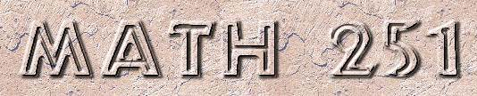

|  |
Time and Place
Sched #269578 Sec001: M_WRF 8:00A - 8:50A, 367 Willard
Sched #269605 Sec010: M_WRF 9:05A - 9:55A, 123 E E East
Sched #269581 Sec002: M_WRF 10:10A - 11:00A, 307 Boucke
-
Attendance is expected.
Exam I 1,7,6 = 100 points
Exam II 2,7,6 = 100 points
Final Exam3,7,6 = 150 points
Quizzes4,8,6 = 100 points
Total5 = 450 points
-
1 Exam I was on September 29
2 Exam II will be on November 2 at 6:30-7:45pm in 102 Forum.
3 Final will be announced by the registrar.
4 Almost daily quizzes will be given. Approximately one half of the scores will be dropped at the end of the semester so that the average on the quizzes among the students completing the course in each section will be compatible with the averages of students on homework/quizzes in the other sections of Math 251.
-
5 The grades in this course will not be curved.
The following are the cutoffs for letter grades:
A 405, A- 390, B+ 375, B 360, B- 345, C+ 330, C 315, D 270.
6 All electronic devices (e.g. calculators), notes, and books may not be used during quizzes and exams.
7 Makeup exams will be given with a 20% penalty unless a University recognized, documented excuse is provided.
8 Makeup quizzes will not be given.
-
Tutoring at
The MATH Center
Starting: Monday, August 31, 2009 at 9:00AM
Location: 7 Sparks
Times:
- Sunday: 6:00PM - 10:00PM
Monday - Thursday: 6:00PM - 10:00PM
-
Moses Glasner
Office: 318c McAllister
Tel: (814) 865-7527
Office hours: M_WRF 11:10-11:55am
Click here to send e-mail: glasnerATmathDOTpsuDOTedu
-
Elementary Differential Equations and Boundary Value
Problems
by W.E. Boyce - R.C. DiPrima,
9th Edition, 2008, John Wiley & Sons
-
ISBN 978-0-470-38334-6
OLDER EDITIONS OF THIS TEXTBOOK CAN BE USED
Reserve copies available at Physical and Math Sciences Library:
QA371.B773 2009, QA371.B773 2009 solutions, QA371.B773 2005, QA371.B77 2004, QA371.B773 2001, ...
Announcements
Link to
Sample exams
Please keep a log of dates of and reasons for
absences from class.
If missing quizzes has a negative affect
on the overall letter grade in the course
then this may be needed for adjustments to the grade.
- The final exam is on 12/16/2009 at 8:00am in 111 Forum.
- The following is a list of sections/topics not covered by final exam.
3.6,3.8,3.9
6.2,6.4,6.5
Dirichlet problem for a circle

The following is the required academic integrity statement for
this course: During QUIZZES and EXAMS the following apply:
the use of books, or notes of any sort is not permitted;
communicating with anyone or copying anything from anyone is not permitted;
all electronic devices must be turned OFF.
-
Also see the Student Guide to
Policy 49--20: and the
ECoS policy on this matter.
Homework Assignments are available on this web page.
Some rough
Lecture Notes are available here.
Java
applets
for Calculus and DiffEqn's are no longer allowed executables
Graph a function
View space curves and their curvatures
Evaluate definite
integrals
Plot Direction
Field
Solve First
Order ODE's
Solve Second Order ODE's
Solve System
of First Order ODE's
Plot partial sums
of Fourier series
View solutions
of the heat equation
View solutions
of the wave equation
Professor
Mansfield's phase portrait program
Professor
John Polking's Dirfield and Phase Portrait applets
Maxima and Octave are
open source mathematical tools, available for Linux, MAC, Windows
operating systems, that help students and professionals alike to
execute manipulations
that are time consuming or even impossible with paper and pencil.